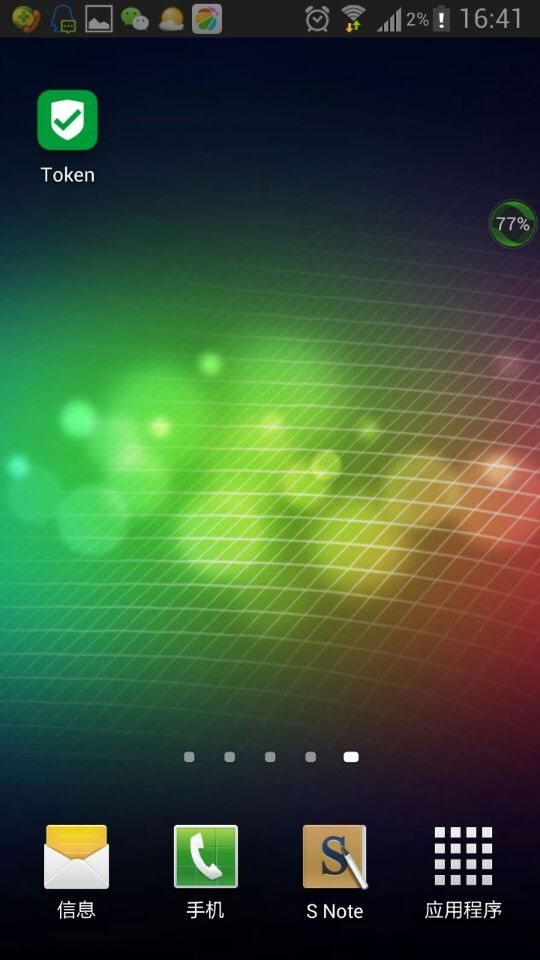
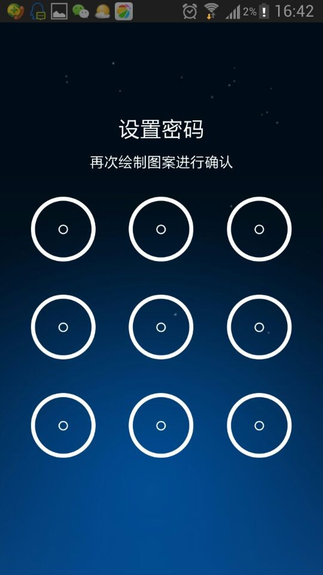
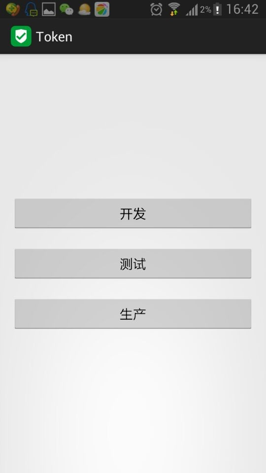
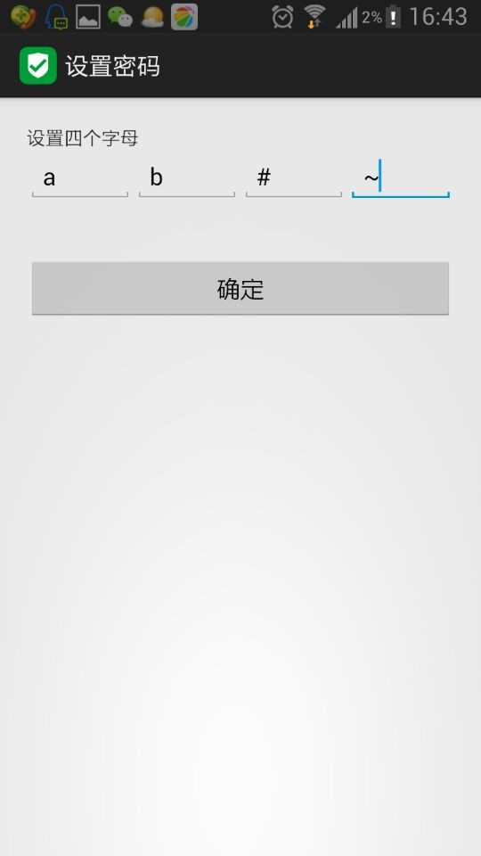
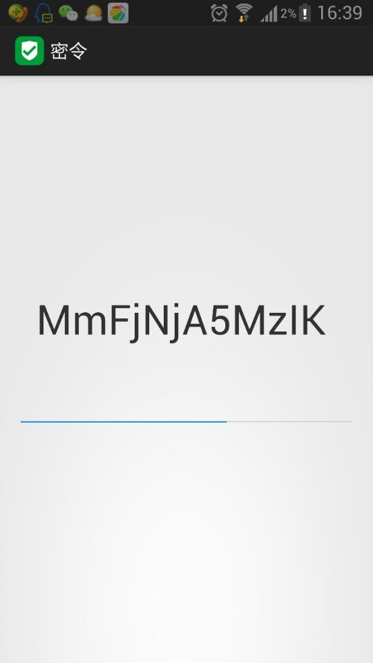
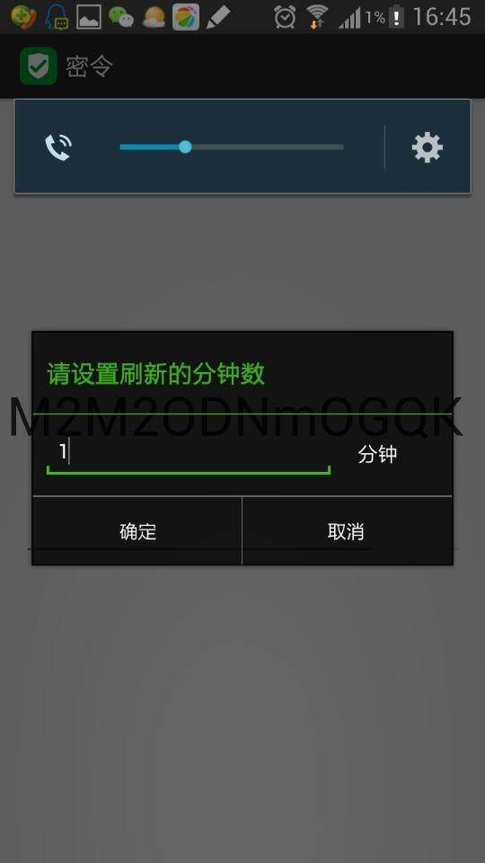

Linux Token Auth 一次性密码认证
http://netkiller.github.io/journal/token.html
版权 © 2014 http://netkiller.github.io
版权声明
转载请与作者联系，转载时请务必标明文章原始出处和作者信息及本声明。
|
|

2014-08-01
服务器端脚本：
https://github.com/oscm/devops/blob/master/bin/chpasswd.sh
手机应用：
https://github.com/oscm/Token
1. 什么是Token
Token(令牌)是一个身份认证标识，token还有一个特点，那就是存在过期时间的。也就是令牌不是长久有效的。
2. 为什么使用令牌
我们通常需要临时或者一次性使用的身份认证
3. 什么时候能用到令牌技术
例如我们去餐厅就餐，向前台获取Wifi密码，然后可以享受30分钟的上网服务。30分钟过后密码将失效。
我们公司有很多服务器，密码的管理非常麻烦，有时还会有人事变动，一旦人员发生变动，所有的服务器密码都需要修改一次，非常麻烦，偶尔会有漏改情况，使用堡垒机可以更好的管理密码，但成本非常昂贵。
于是我便想起了Token技术，但购买Token硬件成本也要花费不少钱。Token的原理我很清楚，通过对称算法算出相同对等密钥，我们可以不购买硬件设备，自己开发，手机设备随身携带，所以开发移动版Token最好不过。
4. 本文的Token应用在什么地方
我采用Token技术实现Linux指定用户的密码周期变化，以时间为基准，手机同步算出服务器上的密码。为了防止密码被穷举，我增加了4个干扰字符。
如果对密码算法强度感到不安全，你可以自行修改复杂度。
你还可以远程修改密码，不多讲。
5. 谁来部署
首先由管理员部署密码修改程序 chpasswd.sh 然后加入到crontab 中定时运行。
由于考虑到读者的水平参差不齐，所以我使用shell完成，这样绝大多数读者都能看懂。
# cat chpasswd.sh #!/bin/bash datetime=`date +%Y-%m-%d" "%H":"%M` email="neo.chan@live.com" #password=$(cat /dev/urandom | tr -cd [:alnum:] | fold -w30 | head -n 1) string=$(date -u "+%Y$1%m$2%d$3%H$4%M") password=$(echo $string | md5sum | cut -c 2-9 | base64 | tr -d "=" | cut -c 1-32) echo $password > ~/.lastpasswd echo $password | passwd www --stdin > /dev/null
~/.lastpasswd 中保存最后一次密码
crontab 设置，每分钟修改一次密码。
# crontab -l */1 * * * * /root/chpasswd.sh a b c d
a b c d 自行设定，设定与手机端相同即可
至此服务器端配置完成
6. 手机端配置
安装Token.apk文件到你的手机
|  |
6.1. 设置密码
 |
确认密码
|  |
选择环境
|  |
设置干扰码
|  |
6.2. 查看服务器密码
|  |
6.3. 设置刷新时间
默认1分钟刷新一次，可能没有来得及输入完密码就会更新密码
如果修改此项，服务器端crontab中的设置同步更改即可。
|  |